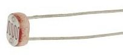
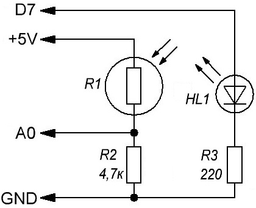

Ночник на Arduino UNO
Рассмотрим реализацию ночника, который будет автоматически включаться когда темно и выключаться когда становится светло.
Сопротивление фоторезистора зависит от света, попадающего на него. Используя фоторезистор в связке с резистором 4,7 кОм, мы получаем делитель напряжения, в котором напряжение проходящее через фоторезистор, изменяется, в зависимости от уровня освещенности.
Напряжение с делителя, мы подаем на аналоговый вход Arduino. Там мы сравниваем полученное значение с определенным порогом и включаем или выключаем светильник.

Принципиальная схема устройства показана на рис. 2. Когда освещенность увеличивается, сопротивление фоторезистора падает и соответственно на резисторе R2 напряжение увеличивается. Когда освещенность падает все наоборот. Вывод А0 используется как вход АЦП.

Здесь мы просто включаем и выключаем светодиод, который подключен к цифровому выводу D7 (через резистор сопротивлением 220 Ом). Если нужно подключать более мощную нагрузку, то ее следует подключать через реле или тиристор.
Скетч
int fotopin = A0; // устанавливаем вывод для АЦП int led = 7; unsigned int foto = 0; // сигнал с фоторезистора void setup() { pinMode(led, OUTPUT); Serial.begin(9600); // инициализация монитора порта } void loop() { foto = analogRead(fotopin); // считываем значение с фоторезистора if(foto<500) digitalWrite(led, HIGH); // включаем светодиод else digitalWrite(led, LOW); // выключаем светодиод //нижеследующие строки служат для отладки Serial.println(foto); // вывод данных с фоторезистора (0-1024) delay(500); }
С помощью строк для отладки можно контролировать значение АЦП (от 0 до 1024). При необходимости в коде нужно изменить значение порог включения и выключения (500) на то, которое вы подберете опытным путем, изменяя освещенность.